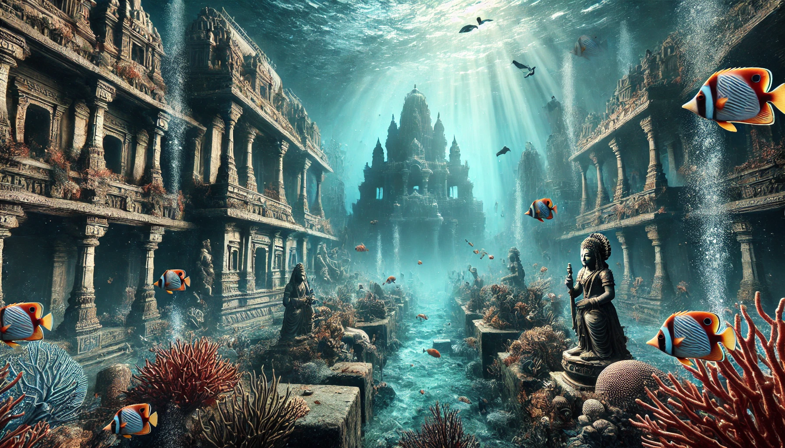

Motivation
The City of Dwarka is believed to be the city that was established by Lord Krishna in Hindu Scriptures. It was described as a well-planned city with grand palaces, golden streets, and a fortified structure. According to the Mahabharata, after Krishna's departure from the world, the whole city of Dwarka was engulfed by the ocean as part of a divine prophecy. Thus the divine city was lost in the depth of ocean. Our motivation, for the scene we rendered was to recreate the imagery of the Dwarka City. Below is the image we asked AI to generate based on our knowledge of how city looked like and the imagination we had in our mind. We have taken it to be our motivation to generate similar scene.

AI Generated image given the description in our mind